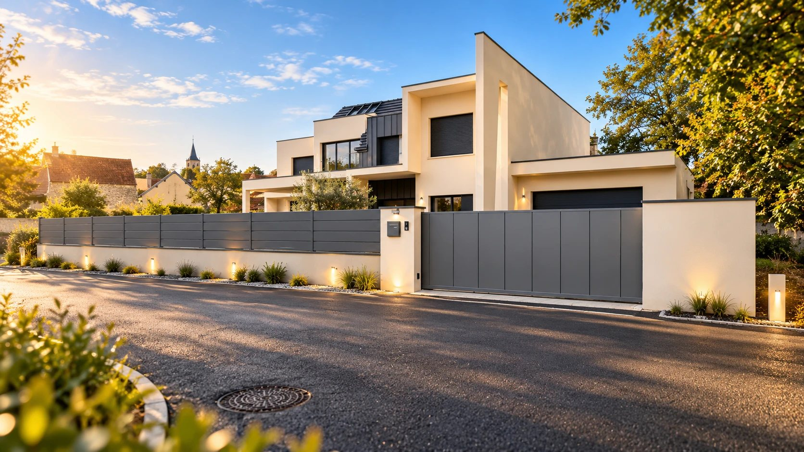
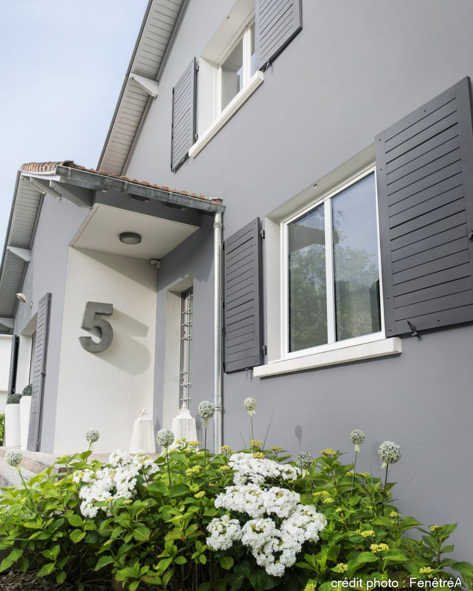
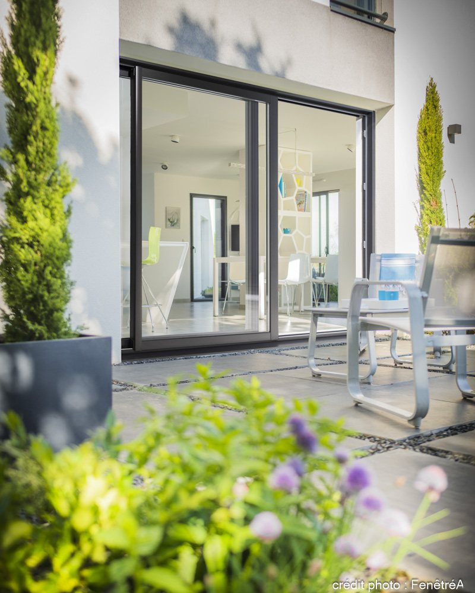
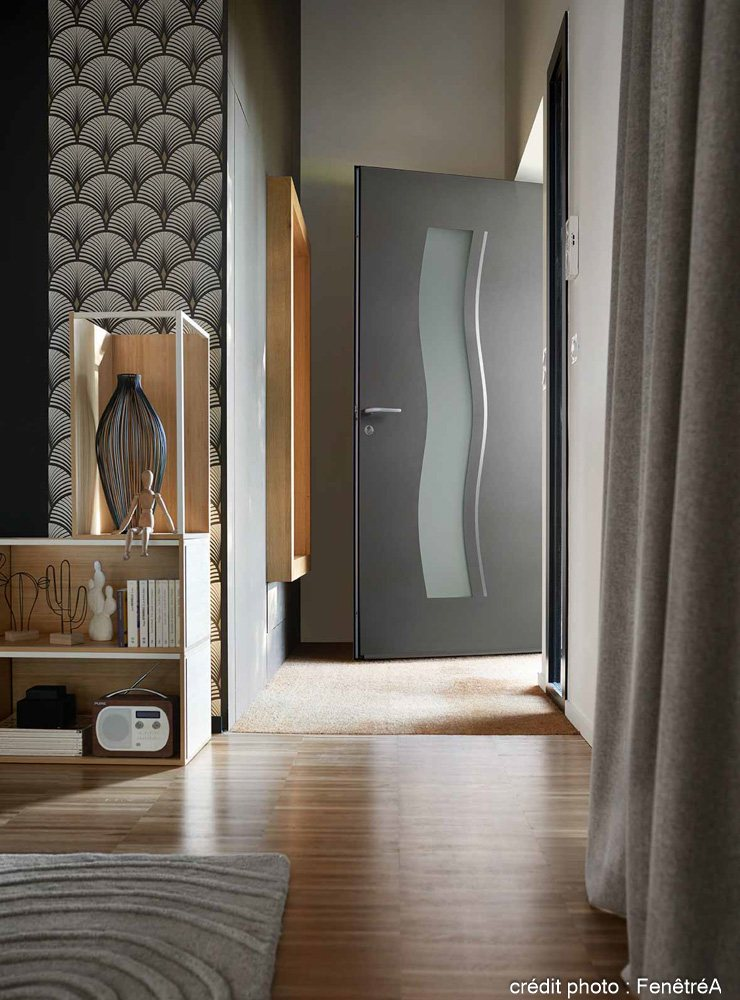
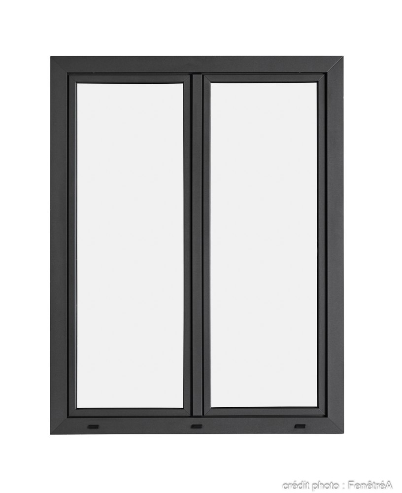

01
Fenêtres
Fenêtres et portes-fenêtres, en rénovation ou en neuf. Prise de cotes, pose, étanchéité et réglages.




Fenêtres, volets roulants, portes, portails et clôtures, portes de garage, pergolas, automatismes et visiophones, à Dijon et dans toute la Côte-d'Or. Un seul interlocuteur, du premier conseil au service après-vente.
01 / 04 Portail coulissant — réalisation TDS Fermetures
Conseils sur le choix des produits, les dimensions et les options, avant de chiffrer quoi que ce soit.
Des produits choisis pour durer et un devis détaillé qui dit précisément ce qui est posé.
Prise de cotes, pose, réglages et finitions faits proprement, chantier laissé net.
Un réglage, une panne de motorisation, une question : un seul numéro à appeler.
Des fenêtres au portail, de la porte d'entrée à la porte de garage, et l'électricité qui les fait fonctionner : automatismes et visiophones.
Fenêtres et portes-fenêtres, en rénovation ou en neuf. Prise de cotes, pose, étanchéité et réglages.
Manuels ou motorisés, en rénovation sur fenêtre existante ou avec une menuiserie neuve.
Portes d'entrée et de service : choix du modèle, pose, réglage de la fermeture.
Portails battants ou coulissants, portillons et clôtures, avec ou sans motorisation.
Sectionnelles, enroulables ou battantes, motorisées avec télécommande.
Pour abriter une terrasse : étude de l'emplacement, des dimensions et des options.
Motorisation de portails, de portes de garage et de volets, télécommandes et commandes centralisées.
Voir et parler à qui sonne, et ouvrir le portail à distance.
Lames verticales pleines, teinte anthracite, coulissement le long du mur : un portail sobre qui ferme la propriété sans alourdir la façade.
Un aperçu des produits : formes, coloris, vitrages et poignées. Le modèle, les dimensions et les options se choisissent ensemble, au moment du devis.
Portail coulissant : réalisation TDS Fermetures. Autres photos : FenêtréA, fabricant — modèles présentés à titre d'exemple.
Dans un logement achevé depuis plus de deux ans, la fourniture et la pose peuvent être facturées à 10 % ou à 5,5 % au lieu de 20 %. Le taux retenu pour votre chantier figure sur le devis.
Remplacement ou pose dans un logement achevé depuis plus de deux ans, produits fournis et posés par l'entreprise.
Même logement, avec des produits qui atteignent les performances thermiques exigées (voir ci-dessous).
MaPrimeRénov', primes CEE et éco-PTZ exigent une entreprise qualifiée RGE, ce que TDS Fermetures n'est pas à ce jour.

Pour la TVA à 5,5 %, une fenêtre ou une porte-fenêtre doit atteindre un coefficient thermique Uw ≤ 1,3 W/m²·K et un facteur solaire Sw ≥ 0,3. Ces valeurs figurent sur la fiche technique du fabricant.
TDS Fermetures n'est pas qualifiée RGE. Les taux de TVA réduits ne l'exigent pas : ils dépendent de l'âge du logement et des produits posés.
Taux et conditions fixés par la loi, susceptibles d'évoluer : le devis précise le taux applicable après vérification. Pour les aides à la rénovation, le service public France Rénov' vous renseigne gratuitement (france-renov.gouv.fr, 0 808 800 700).
TDS Fermetures, c'est Tiago Dos Santos. C'est lui que vous appelez pour un conseil, un devis ou le service après-vente — pas un standard.
Portes, fenêtres, volets, portails, automatismes, visiophones : tout ce qui ferme et sécurise la maison, avec la même exigence de pose.
Par téléphone ou avec le formulaire : vous décrivez votre projet.
Prise de cotes sur place et choix des produits, des coloris et des options.
Fourniture, pose et options chiffrées séparément, pour savoir ce que vous payez.
Pose, mise en service des automatismes, explications, puis SAV si besoin.
Quatre étapes, deux minutes. Votre demande arrive directement dans la boîte mail de TDS Fermetures.
TDS Fermetures l'a reçue par e-mail et vous recontacte. Pour une urgence, appelez le 06 58 00 82 26.
06 58 00 82 26
Tiago Dos Santos
Clients
tiagotdsfermetures.21@hotmail.com
Fournisseurs
sarltdsfermetures.21@hotmail.com
24 rue Lavoisier
21000 Dijon